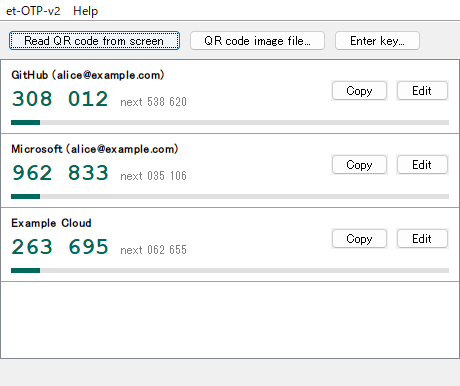

A TOTP soft token for your desktop
et-otp-v2 generates time-based one-time passwords (RFC 6238) for two-step verification. It is a small Java Swing program that registers a service by reading the QR code shown on your screen.
Download Source code
Features
- Generates two-step verification codes (TOTP, RFC 6238) and shows the next code and the remaining time. SHA-1, SHA-256 and SHA-512, 6 to 8 digits and any period are supported.
- Holds any number of services. Click a code or press Copy to copy it to the clipboard.
- Registers a service by reading a QR code shown on the screen, on Windows even from a window behind other windows. You can also register from a QR code image file or by typing in the key.
- Stores the services encrypted. On Windows, choose between protection for your Windows user (no password) and a password; on macOS and Linux a password is used.
- Shows an icon for each service: icons of well-known services are bundled, and an icon can be fetched from the site of a service when you ask for it.
- Exports the services to an encrypted file that can be restored on another computer.
- English and Japanese user interface.
- With password protection, locks again after a period without use or when the computer is locked.
- Filters the services by name and copies a code with the keyboard only; the order of the services can be changed.
- Hides the codes on request; on Windows, the windows can also be left out of screen sharing and screenshots.
Install and run
Download the portable edition for your OS from the Releases page. It bundles a Java runtime built from Amazon Corretto 25 (LTS), so no installation and no administrator rights are needed.
| OS | File | How to start |
|---|---|---|
| Windows | et-otp-v2-<version>-windows-x64-portable.zip | Extract it and double-click et-otp-v2.bat. |
| macOS (Apple silicon) | et-otp-v2-<version>-macos-arm64-portable.tar.gz | Extract it and double-click et-otp-v2.command. If it does not start, run sh et-otp-v2.command in Terminal. |
| Linux | et-otp-v2-<version>-linux-x64-portable.tar.gz | Extract it and run sh et-otp-v2.sh in a terminal. |
The bundled Java executables are Amazon's original Corretto binaries with Amazon's signatures. On a company or organization computer, check your organization's software policy first.
With Java 25 or later installed, you can also use the plain JAR:
java -jar et-otp-v2-<version>.jarTo build it yourself, run mvn verify and use the JAR in the target folder.
Register a service
- Start et-otp-v2. The first time, a setup wizard opens: choose how to protect the services and, for password protection, set a password. You can change the location of the configuration file with Change..., or choose an existing configuration file to keep using it. On Windows it can also create a desktop shortcut.
- In the browser, open the two-step verification setup page of the service so that it shows the QR code.
- In et-otp-v2, press Read QR code from screen. A list of your screens and windows opens, and the one with the QR code is selected. Check it, press Read, check the name of the service and press OK to register it. The images are only used for the list and to find QR codes; they are not saved.
- Type the code shown by et-otp-v2 into the setup page of the service. Without this step the service does not complete the setup.
If no QR code is found, check that it is not too small (enlarge the page with Ctrl and +). If you have a QR code image file, use QR code image file...; if you know the key (a string of letters and digits), use Enter key....
With many services, type part of a name into the search field: only the services whose name contains the text are shown. The search ignores case and the difference between full-width and half-width characters. When a button in the window has focus, typing letters or digits starts the search; for Japanese, press Ctrl+F (⌘F on macOS) to go to the search field first. If one service is shown, Enter copies its code; with several, choose one with the up and down keys first. Esc shows all services again.
To change the order, press Edit on a service or right-click its row, and choose Move up, Move down or Move to top. The order is saved in the configuration file, and --list on the command line uses it as well. While the list is filtered, the order cannot be changed.
The services are saved to .et-otp.properties in your home folder. To move the file to another folder or name, open et-OTP-v2 → Settings and press Move... on the General tab. The chosen location is remembered in .et-otp-location.properties in your home folder and used on the next start; a desktop shortcut created by et-otp-v2 is updated as well. If no location has been chosen and the working directory contains a .et-otp.properties, that file is used (as in et-otp 1.x). Help → About shows the full path. The language and the window position are saved to .et-otp-ui.properties in the same folder.
With password protection, the services are locked again so that nobody can see the codes while you are away. Locking removes the codes from the window and asks for the password again; a code you copied is also removed from the clipboard if it is still there. Open dialogs (entering a key, the settings) are closed, and unconfirmed changes are not saved. By default, et-otp-v2 locks after 5 minutes without use, and when the computer is locked or sleeps. Change this on the Lock tab of et-OTP-v2 → Settings, where you can also turn on locking when the window is minimized. To lock at once, choose et-OTP-v2 → Lock (Ctrl+L, ⌘L on macOS). A locked computer is detected on Windows and macOS; on Linux, et-otp-v2 locks after the time without use and after sleep. With protection for your Windows user, no password is needed to open the services, so they are not locked.
When locking, the key derived from the password is overwritten in memory. The keys of the services are Java strings, which cannot be overwritten; they are freed later as unused memory.
The protection can be changed on the Protection tab of et-OTP-v2 → Settings. Services protected for your Windows user cannot be read on another computer or by another Windows user, so export a backup for a new computer. Keep the backup codes (recovery codes) of your services somewhere other than the computer as well.
To guard against screen sharing in online meetings and people looking over your shoulder, the Display tab of et-OTP-v2 → Settings has two settings.
- Hide the codes (off by default): the code and the next code are shown as "••• •••". The code is revealed only while the mouse is over the service, or for 5 seconds after you press Show on its row. While hidden, a code can still be copied by clicking it, with Copy, or with Enter in the search field. The remaining-time bar is always shown.
- Keep out of screen sharing and screenshots (on by default; Windows 10 version 2004 or later, and macOS 27 or later): the windows and dialogs of et-OTP-v2 are left out of screen sharing, recordings and screenshots. They are not painted black: what is behind them is shown instead. On your own screen they look as usual. Read QR code from screen still works. On macOS, it may not work with some apps or in later versions of macOS. On Linux and on macOS 26 or earlier, this setting is not shown.
The user interface follows the language of the OS: Japanese on a Japanese system, English otherwise. To change it, open et-OTP-v2 → Settings and select the language on the General tab.
Get a code on the command line
Started with --code <name>, et-otp-v2 writes the current code of the service without opening the window, so a batch file or script can use it where a 2-step verification code is needed. With the portable edition for Windows:
for /f "delims=" %%c in ('call "C:\tools\et-otp-v2\et-otp-v2.bat" --code AWS') do set MFA_CODE=%%c
if not defined MFA_CODE exit /b 1- Use the name shown in et-otp-v2. If no service has exactly that name, et-otp-v2 looks for one ignoring case.
--listwrites the names of the registered services. - If the services are protected with a password, you are prompted for it (unless you use
--password-stdin), and the password is not shown as you type. With protection for your Windows user, the code is written without a prompt. - If the code changes within 3 seconds, et-otp-v2 waits for the next code and writes that one.
- Only the code (or the JSON, with
--json) goes to standard output; the password prompt and errors go to standard error. The exit code is 0 on success, 1 on failure and 2 for invalid options. - The configuration file is only read, never written, so this also works while the window is open. Files in the et-otp 1.x and et-otp-v2 2.0 formats cannot be read: open them once in the window first to convert them.
- With the portable edition, run
sh et-otp-v2.command --code AWSon macOS andsh et-otp-v2.sh --code AWSon Linux. With the plain JAR, runjava -jar et-otp-v2-<version>.jar --code AWS.
Other options (--help lists them):
--copy: copies the code to the clipboard instead of writing it. et-otp-v2 does not clear it from the clipboard later. On Linux, if no clipboard manager is running, the copied code disappears when et-otp-v2 exits.--next: writes the code of the next period, without waiting for the code to change.--json: writes the result as JSON. For--code: the name (name), the code (code), the seconds left (secondsLeft), the period (period) and the next code (next). Characters outside ASCII are written as\uXXXX, so the encoding of the console does not matter.--password-stdin: reads the password from the first line of the standard input. This works without a console, for example in the Task Scheduler or when called from another program. If the password is wrong, it fails without asking again.--config <file>: uses this configuration file.--version: writes the version.
For example, pass the password to --password-stdin from a file that other users cannot read:
"C:\tools\et-otp-v2\et-otp-v2.bat" --code AWS --password-stdin < "%USERPROFILE%\secret\et-otp-password.txt"There is no option to pass the password in an environment variable or as an argument. Other programs can see command-line arguments, and other programs run by the same user can read environment variables, which are also passed on to every program started. echo password | ... also works, but cmd runs the left side of the pipe as a separate cmd whose command line, password included, is visible to other programs, and the password also stays in the batch file or the command history. Note too that in cmd, echo password | ... passes the space before the "|" as part of the password, so write echo password| ... without the space.
Service icons
The list shows an icon to the left of each service, chosen in this order:
- An image set with Set icon from image file... or fetched with Fetch icon from the site... in the Edit menu of the service (whichever was set last).
- A bundled icon, matched by the issuer in the QR code, or, without an issuer (for example for a key typed in), by the first words of the name.
- The first letter of the name on a color derived from the name.
Fetch icon from the site... shows the site it will connect to. Only when you check it and press Fetch does et-otp-v2 connect directly to that site over HTTPS and fetch the icon named on its top page, or /favicon.ico; it never connects anywhere at other times. No third-party icon service is used, so nobody else learns which services you registered. It sends no cookies and reads the top page only from the site itself. If the site keeps its icon on another server (such as a CDN), et-otp-v2 fetches it from there, but it never connects to an IP address or to a server with a local network name. It uses the proxy settings of the operating system and, besides Java's certificate authorities, trusts those the operating system trusts (the Windows certificate store, the macOS keychains), so that fetching also works on company networks that inspect HTTPS.
For well-known services the site address is filled in. If it is not, or if you use the service on a different site, enter the address of that site (for example example.com).
The image is scaled to a 64 x 64 PNG and stored with the service in the encrypted configuration file, and in backups. PNG, JPEG, GIF, BMP and ICO images can be used; a site that only offers SVG or WebP icons is not supported. Remove set icon removes it again. To hide the icons, turn off Show the icons of the services on the Display tab of et-OTP-v2 → Settings.
Backup and restore
A configuration file protected for your Windows user cannot be opened on another computer or by another Windows user. Export a backup in case the computer breaks or the operating system is reinstalled. With password protection, a backup also helps if the configuration file is lost.
- Choose et-OTP-v2 → Export backup....
- Enter a backup password twice. With password protection, enter the current password as well.
- Choose the folder and the file name. The suggested name is
et-otp-v2-backup-<date>.etotp-backup.
However the configuration file is protected, the backup is encrypted with the backup password (PBKDF2-HMAC-SHA256 and AES-256-GCM). So a backup made with protection for your Windows user can be restored on another computer, on macOS or on Linux, too. The backup password is needed to restore it; without it, the backup cannot be restored. Keep the file somewhere other than the computer, for example on a USB drive.
To restore, choose et-OTP-v2 → Restore from backup... and enter the file and the backup password. Then choose one of these:
- Add: registers the services of the backup whose key is not registered yet.
- Replace: deletes the registered services and registers the services of the backup.
A wrong password or a damaged file leaves the configuration file unchanged. To restore on a new computer, create a configuration file with the setup wizard first, then choose Restore from backup....
If no backup was exported, or services were added or deleted after it, a note is shown under the list (not after renaming or moving a service). It can be turned off on the General tab of et-OTP-v2 → Settings.
Upgrading from et-otp 1.x and et-otp-v2 2.0
et-otp-v2 reads the configuration files of the original et-otp and of et-otp-v2 2.0, so you can keep using your existing .et-otp.properties. Start et-otp-v2 in the same folder and unlock it with your current password.
On the first successful unlock, et-otp-v2 copies the old file to .et-otp.properties.v1.bak (et-otp 1.x) or .et-otp.properties.v2.bak (et-otp-v2 2.0) and rewrites .et-otp.properties in the new format, which holds several services.
After upgrading from et-otp 1.x, check the code once. The old format cannot detect every wrong password. If the codes are not accepted by the service, restore the backup file and unlock again with the correct password.
et-otp 1.x and et-otp-v2 2.0 cannot read the new format. If you need to go back, use the backup file. Once the new codes work, delete the backup.
| et-otp 1.x | et-otp-v2 | |
|---|---|---|
| Key derivation | PBKDF2-HMAC-SHA1, 1,000 iterations, 128-bit key | PBKDF2-HMAC-SHA256, 600,000 iterations, 256-bit key (password protection) |
| Encryption | AES in ECB mode with PKCS#5 padding | AES-256-GCM with a random 96-bit IV (password protection), or Windows DPAPI |
| Wrong password / tampering | Not always detected | Always detected |
License and credits
et-otp-v2 is free software under the GNU General Public License v2.0 only.
It is a continuation of et-otp by Bernd Eckenfels. It includes a Java port of the QR code decoder quirc by Daniel Beer (ISC license).
The bundled service icons come from Simple Icons (CC0 1.0). The logos are trademarks of their owners; et-otp-v2 shows them only to identify the services you registered and is not affiliated with their owners.